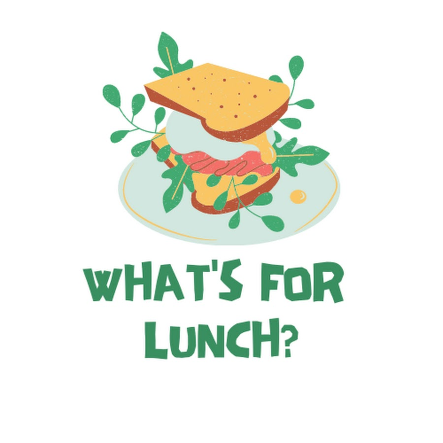

Welcome
"What's for lunch" is an innovative and user-friendly information system designed to help you manage your kitchen inventory effectively. It is the ultimate solution for keeping track of the ingredients in your fridge, pantry, and more. Say goodbye to the hassle of wondering what ingredients you have on hand or making unnecessary trips to the grocery store.
With "What's for lunch" you can easily create and maintain a detailed inventory of all the items in your kitchen. Whether it's fresh produce, dairy products, spices, or any other ingredient, you can enter and update them with just a few clicks. The system also provides convenient features like expiration date tracking and quantity management, ensuring that you never waste food again.
Our information system goes beyond just inventory management. It offers various features to enhance your culinary experience. You can search for recipes based on the ingredients you have, discover new meal ideas, and even get personalized recommendations based on your dietary preferences. Additionally, "What's for lunch" connects you with nearby users who are willing to lend or borrow ingredients. This opens up a world of possibilities for collaborative cooking and sharing resources within our vibrant community.
Whether you're a busy professional, a home cook, or someone passionate about reducing food waste and connecting with like-minded individuals, "What's for lunch" is the perfect companion for your kitchen. Join our community today and experience the convenience, sustainability, and joy of efficient kitchen management.
Our Mission
Reduce food waste and promote sustainability: We aim to combat food waste by connecting users and enabling them to share excess food items, reducing waste and promoting a more sustainable approach to consumption.
Foster a sense of community: We strive to create a community of individuals who are passionate about minimizing food waste and supporting each other by sharing resources and creative recipes.
Empower users to make a positive impact: We believe that small actions can lead to significant change. Our mission is to empower users to take control of their food consumption habits and contribute to a more sustainable future."
What We Offer
Recipe Suggestions: Discover a wide variety of recipes based on the ingredients you have in your fridge. Our system will suggest creative and delicious recipes to help you make the most of your available food.
Food Sharing Platform: Share your excess food items with others in your vicinity. Connect with people nearby who may need or appreciate the food you have to offer, fostering a sense of community and reducing waste.
Personalized Profiles: Create a profile to customize your experience. Add your allergies, dietary preferences, and location information to receive tailored recipe recommendations and connect with like-minded users.
Expiration Date Notifications: Receive timely notifications when the food in your fridge is about to expire, helping you prevent food waste by using it in time or offering it to others.
User-Friendly Interface: Our intuitive and user-friendly interface makes it easy to navigate the system, manage your food inventory, and engage with the community.


- "Using 'What's in My Fridge' has been a game-changer for me. I've significantly reduced food waste and discovered amazing recipes I never thought of before. Highly recommend!" - Sarah M.
- "I love how this information system brings people together and promotes community sharing. It's amazing to see the positive impact we can make by simply sharing our excess food." - John D.
- "As a busy professional, I often struggle with meal planning and using up ingredients before they go bad. 'What's in My Fridge' has become my go-to solution for creative recipe ideas and avoiding food waste." - Emily T.
- "The concept of 'What's in My Fridge' is brilliant. It not only helps me save money by using what I have but also allows me to connect with my neighbors and build meaningful relationships." - David S.